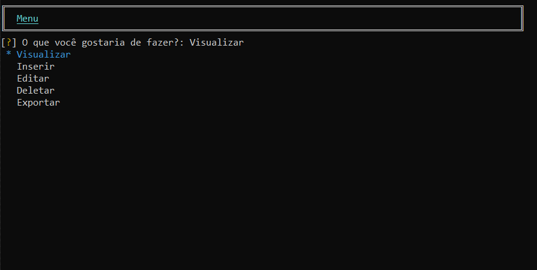

ProjectCloud CLI
Um Software de interface de linha de comando (CLI) mais adequada para desenvolvedores, usuários intermediários e avançados.

- Modo Avançado Criado para usuários mais técnicos que desejam usar o software da maneira mais avançada.
- Banco Online No banco online os dados serão salvos na nuvem ligada a sua chave da licença.
- Compatibilidade O Software é compativel com varios sistemas operacionais.
- Licença Online O Software só poderá ser acessado com uma chave de licenciamento.
- Exportação Antes de fechar o Software é possivel retirar seus dados registrados.
Downloads
Versão Atual: ProjectCloud 0.7.2